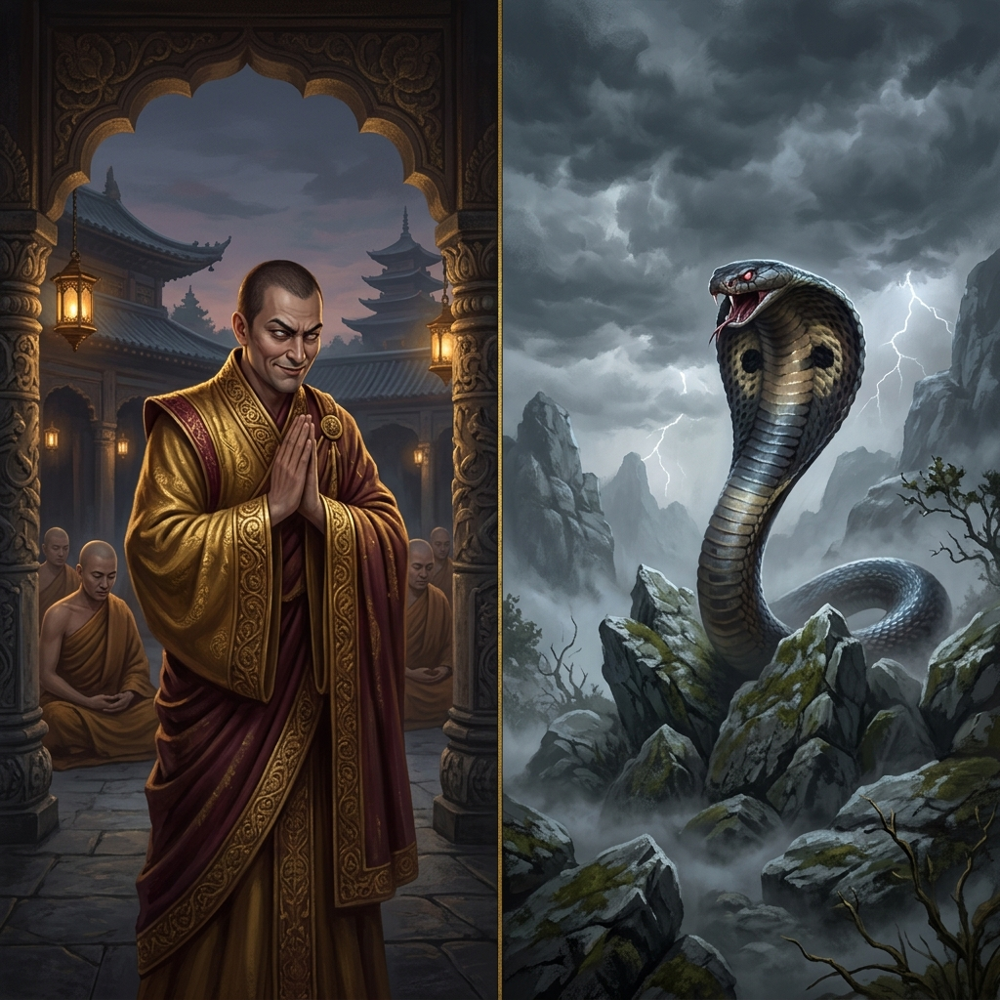
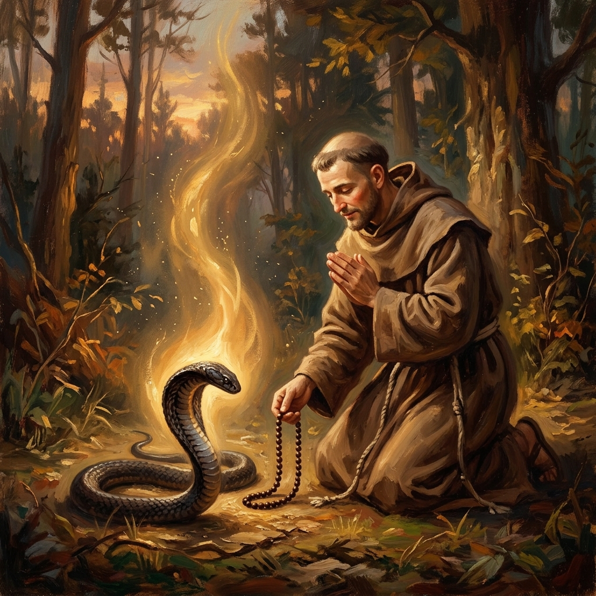
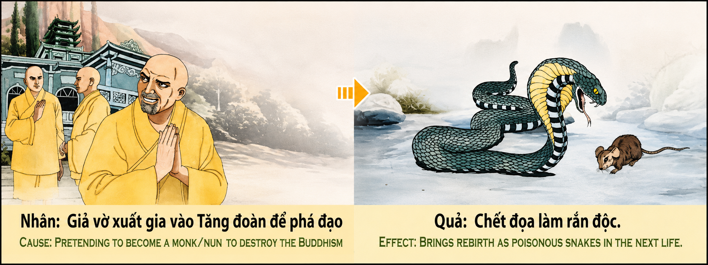

La Profanación del Hábito Sagrado The Profanation of the Sacred Robe La Profanazione dell'Abito Sacro 假亵圣衣 تنجيس الرداء المقدس Осквернение священного одеяния Die Entweihung des heiligen Gewandes La Profanation de l'Habit Sacré 聖衣の冒涜 A Profanação do Hábito Sagrado Giả vờ xuất gia vào Tăng đoàn để phá đạo
Quien viste la túnica sagrada o abraza los votos con hipocresía para corromper la fe desde dentro y traicionar lo sagrado, engendra el veneno más oscuro del alma; pues la ley kármica decreta que usurpar la santidad para sembrar la ruina condena a la conciencia a caer en los reinos inferiores y renacer como una serpiente ponzoñosa en la oscuridad. Whoever wears the sacred robe or takes holy vows with hypocrisy to corrupt the faith from within and betray the sacred generates the darkest poison of the soul; for karmic law decrees that usurping sanctity to sow ruin condemns the consciousness to fall into lower realms and be reborn as a venomous serpent in the dark. Chi indossa l'abito sacro o abbraccia i voti con ipocrisia per corrompere la fede dall'interno e tradire il sacro, genera il veleno più oscuro dell'anima; poiché la legge karmica decreta che usurpare la santità per seminare la rovina condanna la coscienza a cadere nei regni inferiori e a rinascere come un serpente velenoso nell'oscurità. 凡以伪善承理圣衣或接受圣戒，意在从内部败坏信仰并背叛神圣者，皆生成灵魂最深沉之毒害；业力法则裁定，篡夺神圣以播种毁灭，必将裁处其意识坠入低级轮回，在黑暗中化身为毒蛇。 من يرتدي الرداء المقدس أو يعانق النذور بنفاق ليفسد الإيمان من الداخل ويخون المقدس، يولد أظلم سموم الروح؛ فإن قانون الكارما يقضي بأن غصب القدسية لزرع الخراب يحكم على الوعي بالسقوط في العوالم السفلية والولادة كأفعى سامة في الظلام. Тот, кто носит священное одеяние или принимает обеты с лицемерием, чтобы развратить веру изнутри и предать святыню, порождает самый темный яд души; ибо закон кармы гласит, что узурпация святости ради сеяния разрушения обрекает сознание на падение в нижние миры и перерождение ядовитой змеей во тьме. Wer das heilige Gewand trägt oder die Gelübde mit Heuchelei ablegt, um den Glauben von innen heraus zu verderben und das Heilige zu verraten, erzeugt das dunkelste Gift der Seele; denn das karmische Gesetz bestimmt, dass die Anmaßung von Heiligkeit zur Aussaat des Ruins das Bewusstsein dazu verurteilt, in niedere Reiche zu stürzen und als giftige Schlange in der Dunkelheit wiedergeboren zu werden. Quiconque revêt l'habit sacré ou embrasse les vœux avec hypocrisie pour corrompre la foi de l'intérieur et trahir le sacré engendre le poison le plus sombre de l'âme ; car la loi karmique décrète qu'usurper la sainteté pour semer la ruine condamne la conscience à tomber dans les royaumes inférieurs et à renaître sous la forme d'un serpent venimeux dans les ténèbres. 信仰を内側から腐敗させ、神聖なものを裏切るために、虚飾をもって聖衣をまとい、あるいは聖なる誓いを立てる者は、魂の最も暗い毒を生み出すことになる。破滅を撒き散らすために神聖さを簒奪することは、意識を低い領域へ落とし、暗闇の中で毒蛇として生まれ変わらせるとカルマの法則は定めている。 Quem veste a túnica sagrada ou abraça os votos com hipocrisia para corromper a fé a partir de dentro e trair o sagrado, gera o veneno mais escuro da alma; pois a lei cármica decreta que usurpar a santidade para semear a ruína condena a consciência a cair nos reinos inferiores e renascer como uma serpente peçonhenta na escuridão. Giả vờ xuất gia vào Tăng đoàn để phá đạo là tự gieo vào tâm hồn mình thứ độc tố đen tối nhất; bởi vì luật nhân quả ấn định rằng sự mạo danh thánh thiện để gieo rắc sự sụp đổ sẽ đày đọa tâm thức đọa vào các cõi thấp và tái sinh làm loài rắn độc trong bóng tối.
El relieve original del templo nos presenta una advertencia sobrecogedora sobre el sacrilegio de la falsa devoción: a la izquierda, a las puertas de un templo venerable, un hombre viste la túnica dorada de los monjes y junta sus manos en postura de oración, pero vuelve su rostro con una mirada calculadora, siniestra e hipócrita para traicionar a los verdaderos devotos; a la derecha, la consecuencia kármica se despliega con aterradora precisión: el traidor aparece en un desierto rocoso y árido, convertido en una cobra venenosa de ojos amarillos y colmillos afilados, acechando en la frialdad (Chết đọa làm rắn độc). La causa es fingir ordenarse para destruir la fe desde dentro; el efecto es morir y renacer en existencias futuras como una serpiente ponzoñosa.
La ley del karma revela que las instituciones sagradas y la fe de los hombres no son escenarios para la manipulación ni instrumentos para la codicia. El hábito monástico y las vestiduras de consagración representan la rendición del ego y la búsqueda de la Verdad absoluta. Usar la imagen de la santidad como velo para sembrar la discordia o el engaño es una violación directa del orden cósmico. El veneno que el falso devoto deposita en la fe ajena termina cristalizándose en su propia naturaleza kármica.
La primera dimensión de esta enseñanza es la autodestrucción del centro moral mediante la hipocresía. Fingir santidad mientras se alimenta la malicia destruye la integridad del alma. La mentira repetida en el ámbito divino genera una escisión profunda en la conciencia: la luz exterior del vestuario choca contra la oscuridad interior de las intenciones. Esa disonancia pudre los centros de percepción espiritual, dejando al ser incapaz de sentir la gracia divina y condenándolo a la ceguera espiritual.
La segunda dimensión profundiza en la traición al refugio sagrado de la comunidad. Cuando un impostor se infiltra en una comunidad de fe para corromperla, perturba el refugio espiritual de los necesitados y siembra la duda en los corazones sencillos. Ese peso kármico es monumental: el sufrimiento de las almas confundidas se convierte en una deuda cósmica que priva al traidor de todo mérito, arrastrándolo inexorablemente hacia los reinos de penumbra y tormento.
La tercera dimensión analiza la somatización kármica en forma de serpiente venenosa. La forma física en las existencias futuras refleja la cualidad dominante de la mente al morir. Quien albergó ponzoña de engaño y traición bajo ropajes sagrados renace envuelto en su propia sustancia: una cobra ponzoñosa que debe reptar sobre el vientre en el polvo frío, temida por todos y prisionera del veneno de sus propios colmillos, sufriendo el mismo rechazo que sembró.
La cuarta dimensión revela la liberación a través del arrepentimiento profundo y la transmutación de la ponzoña. Incluso en la condición más baja, la chispa divina del alma no se apaga totalmente. La única vía para sanar el karma de la traición es el arrepentimiento sincero, donde la serpiente del ego inclina la cabeza en el polvo y reconoce la santidad de la Verdad. Al soltar la mentira y pedir perdón desde el abismo, la ponzoña se transmuta en néctar de compasión y el alma es liberada hacia la luz de la redención.
The original relief of the temple presents us with an awe-inspiring warning about the sacrilege of false devotion: on the left, at the gates of a venerable temple, a man wears the golden monastic robe and joins his hands in prayer, but turns his face with a calculating, sinister, and hypocritical glance to betray true devotees; on the right, the karmic consequence unfolds with terrifying precision: the betrayer appears in an arid, rocky wilderness, transformed into a poisonous cobra with yellow eyes and sharp fangs, lurking in coldness. The cause is pretending holy vows to destroy the faith from within; the effect is dying and being reborn as a venomous serpent.
Karmic law reveals that sacred institutions and human faith are not stages for manipulation or instruments for greed. The monastic robe and robes of consecration represent the surrender of ego and the pursuit of absolute Truth. Using the image of sanctity as a veil to sow discord or deceit is a direct violation of cosmic order. The poison the false devotee deposits in another's faith ultimately crystallizes into their own karmic nature.
The first dimension of this teaching is the self-destruction of the moral center through hypocrisy. Feigning sanctity while nourishing malice destroys soul integrity. Repeated deceit in divine matters creates a profound rift in consciousness: the outer light of vestments collides with the inner darkness of intent. That dissonance rots centers of spiritual perception, leaving the being incapable of feeling divine grace and condemning them to spiritual blindness.
The second dimension delves into the betrayal of the community's sacred sanctuary. When an impostor infiltrates a faith community to corrupt it, they disturb the spiritual refuge of those in need and sow doubt in simple hearts. That karmic weight is monumental: the suffering of confused souls becomes a cosmic debt that strips the betrayer of all merit, dragging them inexorably into realms of gloom and torment.
The third dimension analyzes karmic somatization into the form of a venomous serpent. The physical form in future existences reflects the dominant mind quality at death. Whoever harbored the poison of deceit and betrayal beneath sacred garments is reborn wrapped in their own substance: a venomous cobra forced to crawl on its belly in cold dust, feared by all and imprisoned by the venom of its own fangs, suffering the same rejection it sowed.
The fourth dimension reveals liberation through deep repentance and the transmutation of poison. Even in the lowest condition, the soul's divine spark is never fully extinguished. The only path to heal the karma of betrayal is sincere repentance, where the serpent of ego bows its head in the dust and recognizes the holiness of Truth. By releasing deceit and asking forgiveness from the abyss, the poison is transmuted into the nectar of compassion, and the soul is liberated into the light of redemption.
Il rilievo originale del tempio ci presenta un avvertimento impressionante sul sacrilegio della falsa devozione: a sinistra, alle porte di un tempio venerabile, un uomo indossa l'abito monastico dorato e giunge le mani in preghiera, ma volge il volto con uno sguardo calcolatore, sinistro e ipocrita per tradire i veri devoti; a destra, la conseguenza karmica si dispiega con spaventosa precisione: il traditore appare in un deserto roccioso e arido, trasformato in un cobra velenoso con occhi gialli e zanne affilate, in agguato nel freddo. La causa è fingere di ordinarsi per distruggere la fede dall'interno; l'effetto è morire e rinascere come un serpente velenoso.
La legge del karma rivela che le istituzioni sacre e la fede degli uomini non sono palcoscenici per la manipolazione né strumenti per la cupidigia. L'abito monastico rappresenta la resa dell'ego e la ricerca della Verità assoluta. Usare l'immagine della santità come velo per seminare discordia o inganno è una violazione diretta dell'ordine cosmico. Il veleno che il falso devoto deposita nella fede altrui finisce per cristallizzarsi nella sua stessa natura karmica.
La prima dimensione di questo insegnamento è l'autodistruzione del centro morale attraverso l'ipocrisia. Fingere santità mentre si nutre malizia distrugge l'integrità dell'anima. La menzogna ripetuta nell'ambito divino genera una profonda spaccatura nella coscienza: la luce esteriore degli abiti si scontra con l'oscurità interiore delle intenzioni. Quella dissonanza marcisce i centri di percezione spirituale, lasciando l'essere incapace di sentire la grazia divina e condannandolo alla cecità spirituale.
La seconda dimensione approfondisce il tradimento del rifugio sacro della comunità. Quando un impostore si infiltra in una comunità di fede per corromperla, perturba il rifugio spirituale dei bisognosi e semina il dubbio nei cuori semplici. Quel peso karmico è monumentale: la sofferenza delle anime confuse diventa un debito cosmico che priva il traditore di ogni merito, trascinandolo inesorabilmente nei regni di penombra e tormento.
La terza dimensione analizza la somatizzazione karmica sotto forma di serpente velenoso. La forma fisica nelle esistenze future riflette la qualità dominante della mente al momento della morte. Chi ha albergato il veleno dell'inganno e del tradimento sotto paramenti sacri rinasce avvolto nella sua stessa sostanza: un cobra velenoso costretto a strisciare sul ventre nella polvere fredda, temuto da tutti e prigioniero del veleno delle sue stesse zanne, soffrendo lo stesso rigetto che ha seminato.
La quarta dimensione rivela la liberazione attraverso il pentimento profondo e la trasmutazione del veleno. Anche nella condizione più bassa, la scintilla divina dell'anima non si spegne mai del tutto. L'unica via per guarire il karma del tradimento è il pentimento sincero, dove il serpente dell'ego china la testa nella polvere e riconosce la santità della Verità. Rilasciando la menzogna e chiedendo perdono dall'abisso, il veleno si trasmuta nel nettare della compassione e l'anima viene liberata verso la luce della redenzione.
寺庙的原始浮雕为我们呈现了关于假亵神圣之罪业的令人敬畏的警告：左边，在座庄严寺院的大门前，一名男子身穿金色僧袍，合掌作祈祷状，却带着算计、阴险与伪善的眼神扭过头去背叛真正的修行者；右边，业力果报极其精准地展现：背叛者出现在一片干旱、崎岖的荒野中，化身为一条长着黄眼睛与尖锐毒牙的剧毒眼镜蛇，在寒冷中潜伏（Chết đọa làm rắn độc）。因是假装出家进入僧团以破和合僧；果是死后堕落为毒蛇。
业力法则揭示，神圣的教义与世人的信仰决非操纵的舞台，亦非贪婪的工具。僧袍与出家圣衣代表着自我的臣服与对绝对真理的追求。利用神圣的形象作为遮蔽来播种纷争或欺骗，是对宇宙秩序的直接侵犯。假修道者在他人信仰中注入的毒汁，最终将在其自身的业力本性中结晶。
这一教义的第一维度是通过伪善实现道德中心的自我毁灭。在滋养邪恶的同时假装神圣，会毁坏灵魂的完整性。在神圣领域反复造假，会在意识中造成深沉的分裂：法衣外在的光明与内心的阴暗意图发生剧烈碰撞。这种不和谐腐蚀了精神感知的中心，使生命无法感受到神圣的恩典，并判定其走向精神的盲目。
第二维度深入探讨了对社区神圣庇护所的背叛。当一个冒充者潜入信仰社区进行破坏时，他打乱了困苦者的精神避难所，并在单纯的心灵中播下怀疑。那种业力负担是极其沉重的：被困惑灵魂的痛苦变成了宇宙的债务，剥夺了背叛者所有的功德，不可避免地将其拖入阴暗与折磨的轮回。
第三维度分析了显现为毒蛇形态的业力具象化（Chết đọa làm rắn độc）。未来转世的肉身形态反映了临终时占主导地位的心灵品质。凡在圣衣下藏匿欺骗与背叛毒汁的人，转世时将被裹挟于自身的物质中：一条剧毒眼镜蛇，被迫在冰冷的尘土中用腹部爬行，为世人所惧怕，并成为自身毒牙中毒汁的囚徒，承受着与自己所播种的完全相同的排斥。
第四维度揭示了通过深沉忏悔与转毒成智实现的解脱。即使在最低劣的境地，灵魂的神圣火花也从未彻底熄灭。治愈背叛业力的唯一途径是真诚的忏悔，自我之蛇在尘土中低头，承认真理的神圣。通过放下谎言并从深渊中求得原谅，毒汁化为慈悲的甘露，灵魂被解脱走向救赎的光芒。
يقدم لنا نقش المعبد الأصلي تحذيراً مهيباً بشأن دنس التقوى المزيفة: على اليسار، عند أبواب معبد جليل، يرتدي رجل الرداء المجموع الذهبي ويضم يديه في وضعية الصلاة، لكنه يدير وجهه بنظرة حاسبة وشريرة ومنافقة ليخون المؤمنين الصادقين؛ وعلى اليمين، تتجلى النتيجة الكرمية بدقة مرعبة: يظهر الخائن في صحراء صخرية جافة، متحولاً إلى أفعى كوبرا سامة بعينين صفراوين وأنياب حادة، تتربص في البرد. السبب هو التظاهر بالرهبنة لتدمير الإيمان من الداخل؛ والنتيجة هي الموت والولادة كأفعى سامة.
يكشف قانون الكارما أن المؤسسات المقدسة وإيمان البشر ليست مسارح للتلاعب ولا أدوات للجشع. يمثل الرداء الرهباني الاستسلام للأنا والبحث عن الحقيقة المطلقة. إن استخدام صورة القدسية كستار لزرع الشقاق أو الخداع هو انتهاك مباشر للنظام الكوني. فالسم الذي يودعه المؤمن المزيف في إيمان الآخرين ينتهي به المطاف بالتبلور في طبيعته الكرمية ذاتها.
البعد الأول لهذا التعليم هو التدمير الذاتي للمركز الأخلاقي من خلال النفاق. إن التظاهر بالقدسية مع تغذية الخبث يمرر نزاهة الروح. إن الكذب المتكرر في المجال الإلهي يخلق انقساماً عميقاً في الوعي: فالنور الخارجي للملابس يصطدم بالظلمة الداخلية للنية. هذا النشاز يعفن مراكز الإدراك الروحي، مما يجعل الكائن غير قادر على الشعور بالنعمة الإلهية ويحكم عليه بالعمى الروحي.
البعد الثاني يتعمق في خيانه الملاذ المقدس للمجتمع. عندما يتسلل دجال إلى مجتمع إيماني لإفساده، فإنه يربك الملاذ الروحي للمحتاجين ويزرع الشك في القلوب البسيطة. هذا الثقل الكرمي ضخم: إن معاناة الأرواح الحائرة تصبح ديناً كونياً يجرد الخائن من كل استحقاق، ويسحبه بلا رحمة نحو عوالم الظلمة والعذاب.
البعد الثالث يحلل التجلي الكرمي على شكل أفعى سامة. الشكل الجسدي في الحيوات المستقبلية يعكس الجودة الذهنية المهيمنة عند الموت. من أضمر سم الخداع والخيانه تحت الملابس المقدسة يولد ملفوفاً في مادته الخاصة: كوبرا سامة مجبرة على الزحف على بطنها في الغبار البارد، يخشاها الجميع وسجينة سم أنيابها الخاصة، تعاني من الرفض ذاته الذي زرعته.
البعد الرابع يكتشف التحرير من خلال التوبة العميقة وتحويل السم. حتى في أدنى الحالات، لا تنطفئ الشرارة الإلهية للروح تماماً. الطريقة الوحيدة لشتاء كارما الخيانة هي التوبة الصادقة، حيث تحني أفعى الأنا رأسها في الغبار وتعترف بقدسية الحقيقة. بإطلاق الكذب وطلب المغفرة من الهاوية، يتحول السم إلى نكتار الرحمة وتُحرر الروح نحو نور الفداء.
Оригинальный храмовый рельеф представляет нам грозное предупреждение о святотатстве ложного благочестия: слева, у ворот почтенного храма, человек носит золотые монашеские одежды и молитвенно складывает руки, но отворачивается с расчетливым, зловещим и лицемерным взглядом, чтобы предать истинных молящихся; справа кармическое следствие разворачивается с ужасающей точностью: предатель появляется в сухой, rocky пустыне, превратившись в ядовитую кобру с желтыми глазами и острыми клыками, таящуюся в холоде. Причина — притворное принятие монашества ради разрушения веры изнутри; следствие — смерть и перерождение ядовитой змеей.
Кармический закон раскрывает, что священные институты и вера людей — это не сцены для манипуляций и не инструменты для алчности. Монашеское одеяние представляет собой смирение эго и поиск абсолютной Истины. Использование образа святости в качестве veil для сеяния раздора или обмана является прямым нарушением космического порядка. Яд, который ложный верующий оставляет в чужой вере, в конечном итоге кристаллизуется в его собственной кармической природе.
Первое измерение этого учения — саморазрушение морального центра через лицемерие. Притворство святости при питании злобы разрушает целостность души. Повторяющаяся ложь в божественной сфере создает глубокий раскол в сознании: внешний свет одеяний сталкивается с внутренней тьмой намерений. Этот диссонанс гноит центры духовного восприятия, делая существо неспособным чувствовать божественную благодать и обрекая его на духовную слепоту.
Второе измерение углубляется в предательство священного убежища общины. Когда самозванец проникает в религиозную общину, чтобы развратить ее, он нарушает духовное убежище нуждающихся и сеет сомнения в простых сердцах. Этот кармический вес монументален: страдания смущенных душ становятся космическим долгом, который лишает предателя всех заслуг, безжалостно увлекая его в реликвии мрака и мучений.
Третье измерение анализирует кармическую соматизацию в форму ядовитой змеи. Физическая форма в будущих воплощениях отражает доминирующее качество разума при смерти. Тот, кто таил яд обмана и предательства под священными одеждами, перерождается окутанным собственной субстанцией: ядовитая кобра, вынужденная ползать на брюхе в холодной пыли, отторгаемая всеми и узница яда собственных клыков, страдающая от того же отвержения, которое сеяла.
Четвертое измерение раскрывает освобождение через глубокое покаяние и трансмутацию яда. Даже в самом низшем состоянии божественная искра души никогда не угасает полностью. Единственный путь исцелить карму предательства — это искреннее раскаяние, когда змея эго клонит голову в пыль и признает святость Истины. Отпуская ложь и прося прощения из бездны, яд преобразуется в нектар сострадания, и душа освобождается к свету искупления.
Das ursprüngliche Relief des Tempels zeigt uns eine furchterregende Warnung vor dem Sakrileg der falschen Frömmigkeit: Links an den Toren eines ehrwürdigen Tempels trägt ein Mann das goldene Mönchsgewand und legt die Hände im Gebet zusammen, wendet aber sein Gesicht mit einem berechnenden, finsteren und heuchlerischen Blick ab, um die wahren Gläubigen zu verraten; rechts entfaltet sich die karmische Folge mit erschreckender Präzision: Der Verräter erscheint in einer dorren, felsigen Wüste, verwandelt in eine giftige Kobra mit gelben Augen und scharfen Giftzähnen, die in der Kälte lauert. Die Ursache ist die Anmaßung heiliger Gelübde, um den Glauben von innen heraus zu zerstören; die Wirkung ist das Sterben und Wiedergeborenwerden als giftige Schlange.
Das karmische Gesetz offenbart, dass heilige Institutionen und der Glaube der Menschen keine Bühnen für Manipulationen oder Instrumente der Habgier sind. Das Mönchsgewand repräsentiert die Hingabe des Egos und das Streben nach absoluter Wahrheit. Das Bild der Heiligkeit als Schleier zu benutzen, um Zwietracht oder Täuschung zu säen, ist eine direkte Verletzung der kosmischen Ordnung. Das Gift, das der falsche Gläubige im Glauben anderer hinterlässt, kristallisiert sich schließlich in seiner eigenen karmischen Natur heraus.
Die erste Dimension dieser Lehre ist die Selbstzerstörung des moralischen Zentrums durch Heuchelei. Heiligkeit vorzutäuschen, während man Bosheit nährt, zerstört die Integrität der Seele. Die wiederholte Lüge in göttlichen Dingen erzeugt eine tiefe Spaltung im Bewusstsein: Das äußere Licht der Gewänder prallt auf die innere Dunkelheit der Absicht. Diese Dissonanz lässt die Zentren der spirituellen Wahrnehmung verfaulen, macht das Wesen unfähig, göttliche Gnade zu spüren, und verurteilt es zu spiritueller Blindheit.
Die zweite Dimension vertieft den Verrat an der heiligen Zuflucht der Gemeinschaft. Wenn ein Betrüger eine Glaubensgemeinschaft infiltriert, um sie zu verderben, stört er die spirituelle Zuflucht der Bedürftigen und sät Zweifel in einfache Herzen. Dieses karmische Gewicht ist monumental: Das Leiden verwirrter Seelen wird zu einer kosmischen Schuld, die dem Verräter jeden Verdienst raubt und ihn unaufhaltsam in Reiche des Dämmerlichts und der Qual zieht.
Die dritte Dimension analysiert die karmische Somatisierung in Form einer giftigen Schlange. Die physische Form in zukünftigen Existenzen spiegelt die vorherrschende Geisteshaltung beim Tod wider. Wer unter heiligen Gewändern das Gift der Täuschung und des Verrats beherbergte, wird in seine eigene Substanz gehüllt wiedergeboren: eine giftige Kobra, die gezwungen ist, auf dem Bauch im kalten Staub zu kriechen, von allen gefürchtet und im Gift ihrer eigenen Zähne gefangen, wobei sie dieselbe Ablehnung erleidet, die sie gesät hat.
Die vierte Dimension offenbart die Befreiung durch tiefe Reue und die Verwandlung des Gifts. Selbst im niedrigsten Zustand erlischt der göttliche Funke der Seele nie ganz. Der einzige Weg, das Karma des Verrats zu heilen, ist aufrichtige Reue, bei der die Schlange des Egos ihren Kopf im Staub neigt und die Heiligkeit der Wahrheit ankennt. Indem sie die Lüge loslässt und aus dem Abgrund um Vergebung bittet, verwandelt sich das Gift in den Nektar des Mitgefühls, und die Seele wird in das Licht der Erlösung befreit.
Le relief original du temple nous présente un avertissement impressionnant sur le sacrilège de la fausse dévotion : à gauche, aux portes d'un temple vénérable, un homme revêt l'habit monastique doré et joint les mains en prière, mais tourne son visage avec un regard calculateur, sinistre et hypocrite pour trahir les vrais dévots ; à droite, la conséquence karmique se déploie avec une précision effrayante : le traître apparaît dans un désert rocheux et aride, transformé en un cobra venimeux aux yeux jaunes et aux crocs acérés, tapis dans le froid. La cause est de feindre d'embrasser les vœux pour détruire la foi de l'intérieur ; l'effet est de mourir et de renaître sous la forme d'un serpent venimeux.
La loi du karma révèle que les institutions sacrées et la foi des hommes ne sont pas des scènes de manipulation ni des instruments de cupidité. L'habit monastique représente le renoncement à l'égo et la recherche de la Vérité absolue. Utiliser l'image de la sainteté comme un voile pour semer la discorde ou la tromperie est une violation directe de l'ordre cosmique. Le poison que le faux dévot dépose dans la foi d'autrui finit par se cristalliser dans sa propre nature karmique.
La première dimension de cet enseignement est l'autodestruction du centre moral par l'hypocrisie. Feindre la sainteté tout en nourrissant la malice détruit l'intégrité de l'âme. Le mensonge répété dans le domaine divin crée une scission profonde dans la conscience : la lumière extérieure des vêtements se heurte à l'obscurité intérieure des intentions. Cette dissonance fait pourrir les centres de perception spirituelle, rendant l'être incapable de ressentir la grâce divine et le condamnant à la cécité spirituelle.
La deuxième dimension approfondit la trahison du refuge sacré de la communauté. Lorsqu'un imposteur s'infiltre dans une communauté de foi pour la corrompre, il perturbe le refuge spirituel des nécessiteux et sème le doute dans les cœurs simples. Ce poids karmique est monumental : la souffrance des âmes confoses devient une dette cosmique qui dépouille le traître de tout mérite, l'entraînant inexorablement vers les royaumes de pénombre et de tourment.
La troisième dimension analyse la somatisation karmique sous la forme d'un serpent venimeux. La forme physique dans les existences futures reflète la qualité dominante de l'esprit au moment de la mort. Celui qui a abrité le poison de la tromperie et de la trahison sous des vêtements sacrés renaît enveloppé de sa propre substance : un cobra venimeux contraint de ramper sur le ventre dans la poussière froide, craint de tous et prisonnier du venin de ses propres crocs, subissant le même rejet qu'il a semé.
La quatrième dimension révèle la libération par le repentir profond et la transmutation du poison. Même dans la condition la plus basse, l'étincelle divine de l'âme ne s'éteint jamais complètement. La seule voie pour guérir le karma de la trahison est le repentir sincère, où le serpent de l'égo incline la tête dans la poussière et reconnaît la sainteté de la Vérité. En libérant le mensonge et en demandant pardon depuis l'abîme, le poison se transmute en nectar de compassion et l'âme est libérée vers la lumière de la rédemption.
寺院のオリジナルのレリーフは、偽りの信仰という冒涜に対する恐ろしい警告を私達に見せてくれます。左側では、厳かな寺院の門前で、一人の男が金色の僧衣をまとい、祈りの pose で手を合わせていますが、計算高く邪悪で偽善的な視線で顔を背け、真の修行者を裏切ろうとしています。右側では、カルマの果報が恐ろしい精度で展開しています。裏切り者は乾燥した岩だらけの荒野に現れ、黄色い目と鋭い毒牙を持つ毒蛇（コブラ）に変身し、寒さの中で潜んでいます（Chết đọa làm rắn độc）。原因は法を破壊するために偽って出家することであり、結果は死後に毒蛇として生まれ変わることです。
カルマの法則は、神聖な機関や人間の信仰が操作の舞台でも貪欲の工具でもないことを明らかにしています。僧衣と聖なる衣装はエゴの降伏と絶対的な真理の探求を象徴しています。神聖さのイメージを不和や欺瞞を撒くためのベールとして使用することは、宇宙の秩序に対する直接的な侵害です。偽りの信仰者が他人の信仰に注ぎ込む毒は、最終的に自らのカルマの性質へと結晶化します。
この教えの第一の次元は、偽善による道徳的中心の自己破壊です。邪悪さを育みながら神聖さを装うことは、魂の誠実さを破壊します。神聖な領域での繰り返される嘘は、意識に深い分裂を生み出します。衣装の外套の外的な光と意図の内的な暗闇が衝突するのです。その不協和音は精神的知覚の中心を腐敗させ、存在が神聖な恵みを感じることを不可能にし、精神的な盲目へと命じます。
第二の次元は、コミュニティの神聖な避難所への裏切りを深く追求します。詐欺師が信仰コミュニティに潜入してそれを腐敗させるとき、困窮している人々の精神的な避難所を乱し、単純な心に疑問を撒き散らします。そのカルマの重みは巨大です。困惑した魂の苦しみは宇宙の債務となり、裏切り者からすべての功徳を奪い、暗闇と拷問の領域へと容赦なく引きずり込みます。
第三の次元は、毒蛇の形態へのカルマ的具現化（Chết đọa làm rắn độc）を分析します。将来の転生における肉体的な形態は、死亡時の支配的な心の質を反映しています。聖衣の下に欺瞞と裏切りの毒を秘めていた者は、自らの物質に包まれて生まれ変わります。冷たい塵の中で腹で這うことを余儀なくされ、すべての人に恐れられ、自らの毒牙の毒の囚人となり、自分が撒いたのと同じ拒絶に苦しむ毒コブラとなるのです。
第四の次元は、深い悔悟と毒の変容による解脱を明らかにします。最も低い状態にあっても、魂の神聖な火花が完全に消えることはありません。裏切りのカルマを癒やす唯一の道は真実の悔悟であり、エゴの蛇は塵の中で頭を下げ、真理の神聖さを認めます。嘘を手放し、深淵から許しを乞うことで、毒は慈悲の蜜へと変容し、魂は救済の光へと解放されます。
O relevo original do templo apresenta-nos um aviso impressionante sobre o sacrilégio da falsa devoção: à esquerda, às portas de um templo venerável, um homem veste a túnica monástica dourada e junta as mãos em postura de oração, mas vira el seu rosto com um olhar calculista, sinistro e hipócrita para trair os verdadeiros devotos; à direita, a consequência cármica desdobra-se com aterrorizante precisão: o traidor aparece num deserto rochoso e árido, convertido numa cobra venenosa de olhos amarelos e presas afiadas, espreitando no frio. A causa é fingir ordenar-se para destruir a fé a partir de dentro; o efeito é morrer e renascer como uma serpente peçonhenta.
A lei do carma revela que as instituições sagradas e a fé dos homens não são palcos para a manipulação nem instrumentos para a cobiça. O hábito monástico representa a rendição do ego e a busca da Verdade absoluta. Usar a imagem da santidade como véu para semear a discórdia ou o engano é uma violação direta da ordem cósmica. O veneno que o falso devoto deposita na fé alheia acaba por se cristalizar na sua própria natureza cármica.
A primeira dimensão deste ensinamento é a autodestruição do centro moral através da hipocrisia. Fingir santidade enquanto se alimenta a malícia destrói a integridade da alma. A mentira repetida no âmbito divino gera uma escisão profunda na consciência: a luz exterior do vestuário choca contra a escuridão interior das intenções. Essa dissonância apodrece os centros de perceção espiritual, deixando o ser incapaz de sentir a graça divina e condenando-o à cegueira espiritual.
A segunda dimensão aprofunda a traição ao refúgio sagrado da comunidade. Quando um impostor se infiltra numa comunidade de fé para a corromper, perturba o refúgio espiritual dos necessitados e semeia a dúvida nos corações simples. Esse peso cármico é monumental: o sofrimento das almas confusas torna-se numa dívida cósmica que priva o traidor de todo o mérito, arrastando-o inexoravelmente para os reinos de penumbra e tormento.
A terceira dimensão analisa a somatização cármica em forma de serpente venenosa. A forma física nas existências futuras reflete a qualidade dominante da mente ao morrer. Quem albergou peçonha de engano e traição sob vestes sagradas renasce envolto na sua própria substância: uma cobra peçonhenta que deve rastejar sobre o ventre no pó frio, temida por todos e prisioneira do veneno das suas próprias presas, sofrendo a mesma rejeição que semeou.
A quarta dimensão revela a libertação através do arrependimento profundo e a transmutação da peçonha. Mesmo na condição mais baixa, a centelha divina da alma nunca se apaga totalmente. A única via para curar o carma da traição é o arrependimento sincero, onde a serpente do ego inclina a cabeça no pó e reconhece a santidade da Verdade. Ao soltar a mentira e pedir perdão a partir do abismo, a peçonha transmuta-se em néctar de compaixão e a alma é libertada para a luz da redenção.
Bức phù điêu nguyên bản của ngôi chùa trình bày một lời cảnh báo đáng sợ về tội ác mạo danh thánh thiện: bên trái, tại cổng một ngôi chùa cổ kính, một người đàn ông mặc áo cà sa vàng của chư tăng và chắp tay cầu nguyện, nhưng ngoảnh mặt đi với ánh mắt tính toán, hiểm độc và giả tạo để phản bội những người tu chân chính; bên right, quả báo hiển hiện một cách khủng khiếp: kẻ phản bội xuất hiện trong một hoang mạc đá khô cạn, biến thành một con rắn hổ mang độc có đôi mắt vàng và nanh nhọn, rình rập trong giá lạnh (Chết đọa làm rắn độc). Nhân là giả vờ xuất gia vào Tăng đoàn để phá đạo; quả là chết đọa làm loài rắn độc.
Luật nhân quả tiết lộ rằng các giáo hội linh thiêng và niềm tin của con người không phải là sân khấu cho sự thao túng hay công cụ cho lòng tham lam. Áo cà sa và y phục xuất gia tượng trưng cho sự buông bỏ cái tôi và sự tìm kiếm Chân lý tuyệt đối. Dùng hình ảnh thánh thiện làm tấm bình phong gieo rắc sự chia rẽ hay lừa dối là một sự vi phạm trực tiếp đến trật tự vũ trụ. Độc tố mà kẻ giả tu gieo vào niềm tin của người khác cuối cùng sẽ kết tinh thành chính bản chất nghiệp báo của mình.
Khía cạnh thứ nhất của lời dạy này là sự tự hủy hoại trung tâm đạo đức thông qua sự giả tạo. Giả vờ thánh thiện trong khi nuôi dưỡng lòng hiểm độc sẽ phá hủy sự nguyên vẹn của linh hồn. Lời dối trá lặp đi lặp lại trong chốn thần thánh tạo ra một sự đứt gãy sâu sắc trong tâm thức: ánh sáng bên ngoài của trang phục va chạm với bóng tối bên trong của ý định. Sự bất hòa đó làm mục nát các trung tâm nhận thức tâm linh, khiến chúng sinh không thể cảm nhận được ân hển divine và đày đọa nó vào sự mù lòa tâm linh.
Khía cạnh thứ hai đi sâu vào sự phản bội nơi nương tựa linh thiêng của cộng đồng. Khi một kẻ mạo danh xâm nhập vào một cộng đồng đức tin để phá hoại, họ làm xáo trộn nơi nương tựa tâm linh của những người cần giúp đỡ và gieo rắc sự nghi ngờ trong những trái tim đơn sơ. Khối nghiệp đó cực kỳ to lớn: sự đau khổ của những linh hồn bị hoang mang trở thành một món nợ vũ trụ tước đoạt mọi phước báu của kẻ phản bội, kéo họ một cách tất yếu vào các cõi tăm tối và đau khổ.
Khía cạnh thứ ba phân tích sự biến dạng nghiệp báo thành hình dạng loài rắn độc (Chết đọa làm rắn độc). Hình dạng thể xác trong các kiếp sống tương lai phản ánh phẩm chất tâm trí chủ đạo lúc lâm chung. Kẻ nuôi dưỡng nọc độc lừa dối và phản bội dưới lớp áo linh thiêng sẽ tái sinh trong chính bản chất của mình: một con rắn hổ mang độc phải bò bằng bụng trong cát bụi giá lạnh, bị mọi người sợ hãi và làm tù nhân của nọc độc trên chính nanh của mình, chịu đựng sự xua đuổi giống như sự xua đuổi mà mình đã gieo rắc.
Khía cạnh thứ tư hé lộ sự giải thoát thông qua lòng sám hối sâu sắc và sự chuyển hóa nọc độc. Ngay cả trong hoàn cảnh thấp kém nhất, ngọn lửa thần thánh của linh hồn không bao giờ tắt hoàn toàn. Con đường duy nhất để chữa lành nghiệp phản bội là lòng sám hối chân thành, nơi con rắn cái tôi cúi đầu trong cát bụi và thừa nhận sự linh thiêng của Chân lý. Bằng cách buông bỏ lời dối trá và xin tha thứ từ vực thẳm, nọc độc được chuyển hóa thành mật ngọt từ bi và linh hồn được giải thoát về phía ánh sáng cứu rỗi.

La Serpiente de la Abadía
The Serpent of the Abbey
Il Serpente dell'Abbazia
修道院的毒蛇
أفعى الدير
Змея монастыря
Die Schlange der Abtei
Le Serpent de l'Abbaye
修道院の蛇
A Serpente da Abadia
Con Rắn Trong Chùa Cổ
En las laderas de la Montaña del Viento Azul, se erigía la sagrada Abadía de la Paz Interior, un santuario donde los monjes dedicaban sus vidas al silencio y a la oración por la sanación del mundo. Allí llegó un día Văn, un hombre de mente hábil y corazón codicioso que tomó las vestiduras sagradas no por amor al Altísimo, sino para apoderarse de las limosnas de los peregrinos y debilitar la influencia del abad venerable, el anciano Maestro Cảnh. Văn aprendió de memoria las escrituras, rezaba con voz sonora y se inclinaba profundamente ante las imágenes sagradas, mientras los aldeanos lo admiraban como a un ejemplo de santidad.
Sin embargo, en la quietud de la noche, Văn sembraba cizaña entre los novicios, distorsionaba los mandamientos para fomentar la soberbia y robaba en secreto las ofrendas destinadas a los huérfanos. El Maestro Cảnh, dotado de discernimiento espiritual, conocía los engaños de Văn, pero jamás lo expuso públicamente; lo trataba con compasión infinita y oraba entre lágrimas por su conversión. Lejos de conmoverse, Văn interpretó la mansedumbre del abad como debilidad y planeó robar las reliquias de oro del templo y quemar la biblioteca sagrada. La noche de la tempestad en que intentó huir con el botín, un rayo destruyó el pórtico y Văn murió aplastado en el barro, aferrado al oro sacrílego.
Décadas más tarde, un joven fraile llamado Gabriel caminaba en meditación por las ruinas de la antigua ermita de Văn cuando escuchó un silbido agónico. Al acercarse, vio una temible cobra negra con el dorso moteado de dorado, atrapada sin remedio bajo una pesada losa de granito. La serpiente estaba herida y sus ojos amarillos reflejaban una mezcla de rabia y desesperado sufrimiento. En lugar de huir, Gabriel sintió una inmensa compasión en el pecho. Con esfuerzo, levantó la losa usando una gruesa rama de roble y liberó al reptil.
La serpiente, lejos de erguirse para picarlo, cayó extenuada sobre el musgo. Gabriel se arrodilló a su lado, sacó su rosario de madera y derramó lágrimas de piedad sobre el reptil: «Hermano mío, vestiste el hábito sagrado para sembrar ponzoña y la ley del karma ha encerrado tu alma en este cuerpo de veneno. Has sufrido durante décadas en la oscuridad del suelo, pero el amor divino no ha olvidado tu nombre». Al escuchar estas palabras impregnadas de una gracia sublime, los ojos de la cobra dejaron caer lágrimas humanas y su cuerpo dejó de convulsionar.
La serpiente apoyó mansamente su cabeza sobre la mano extendida de Gabriel en señal de hondo arrepentimiento, soltando en su último suspiro la amargura de su pasado. En ese instante, una brisa de luz dorada brotó de las escamas del reptil, envolviendo el bosque en una fragancia de sándalo e incienso. El alma de Văn fue liberada de su envoltura ponzoñosa y ascendió redimida hacia los cielos, mientras Gabriel comprendía la eterna lección: «No hay disfraz que engañe a la ley divina, ni fosa de veneno que la verdadera compasión no pueda sanar. Solo cuando el alma se despoja de la hipocresía y se humilla en la verdad, renace victoriosa a la luz eterna».
On the slopes of Blue Wind Mountain stood the sacred Abbey of Inner Peace, a sanctuary where monks dedicated their lives to silence and prayer for the healing of the world. There arrived one day Văn, a man of sharp mind and greedy heart who took sacred vestments not out of love for the Most High, but to seize pilgrims' alms and weaken the influence of the venerable abbot, old Master Cảnh. Văn memorized scriptures, prayed aloud, and bowed deeply before sacred images, while villagers admired him as a pillar of sanctity.
Yet in the quiet of the night, Văn sowed discord among novices, distorted commandments to foster pride, and secretly stole offerings meant for orphans. Master Cảnh, gifted with spiritual discernment, knew Văn's deceit, but never exposed him publicly; he treated him with infinite compassion and wept in prayer for his conversion. Far from being moved, Văn interpreted the abbot's gentleness as weakness and planned to steal the temple's golden relics and burn the sacred library. On the stormy night he attempted to flee with the loot, lightning struck the porch, and Văn died crushed in the mud, clutching the sacrilegious gold.
Decades later, a young friar named Gabriel was meditating near the ruins of Văn's old hermitage when he heard a faint, agonized hiss. Approaching, he saw a fearsome black cobra with gold-speckled scales, helplessly trapped beneath a heavy granite slab. The snake was wounded, its yellow eyes reflecting a mixture of rage and desperate agony. Instead of fleeing, Gabriel felt an immense wave of compassion in his chest. Straining hard, he lifted the slab using a thick oak branch and freed the reptile.
The serpent, far from rearing up to strike, collapsed exhausted onto the moss. Gabriel knelt beside it, drew out his wooden rosary, and shed tears of mercy over the creature: "My brother, you wore the sacred robe to sow poison, and the law of karma enclosed your soul in this body of venom. You have suffered for decades in the cold darkness of the earth, yet divine love has not forgotten your name." Hearing these words bathed in sublime grace, human tears fell from the cobra's eyes, and its convulsions ceased.
The serpent gently laid its head upon Gabriel's outstretched hand in deep repentance, releasing the bitterness of its past with its final breath. At that moment, a breeze of golden light burst from the reptile's scales, enveloping the forest in a fragrance of sandalwood and incense. Văn's soul was freed from its poisonous husk and ascended redeemed toward the heavens, as Gabriel understood the eternal lesson: "No disguise can deceive divine law, nor is there any pit of venom that true compassion cannot heal. Only when the soul sheds hypocrisy and humbles itself in truth does it rise victorious into eternal light."
Sulle pendici del Monte del Vento Blu sorgeva la sacra Abbazia della Pace Interiore, un santuario dove i monaci dedicavano la vita al silenzio e alla preghiera. Un giorno vi giunse Văn, un uomo dalla mente scaltra e dal cuore avido che prese gli abiti sacri non per amore dell'Altissimo, ma per impadronirsi delle elemosine dei pellegrini e indebolire l'influenza del venerabile abate, il vecchio Maestro Cảnh. Văn imparò a memoria le Scritture, pregava a voce alta e si inchinava davanti alle immagini sacre, mentre i contadini lo ammiravano come un esempio di santità.
Tuttavia, nella quiete della notte, Văn seminava discordia tra i novizi, distorceva i comandamenti per fomentare la superbia e rubava le offerte destinate agli orfani. Il Maestro Cảnh, dotato di discernimento spirituale, conosceva gli inganni di Văn, ma non lo espose mai pubblicamente; lo trattava con compassione infinita e pregava in lacrime per la sua conversione. Ben lontano dal commuoversi, Văn interpretò la mitezza dell'abate come debolezza e pianificò di rubare le reliquie d'oro del tempio. La notte di tempesta in cui tentò di fuggire con il bottino, un fulmine distrusse il portico e Văn morì schiacciato nel fango, aggrappato all'oro sacrilego.
Decenni dopo, un giovane frate di nome Gabriele meditava presso le rovine dell'antico eremo di Văn quando udì un fischio agonizzante. Avvicinandosi, vide un temibile cobra nero incastrato sotto una pesante lastra di granito. Il serpente era ferito e i suoi occhi gialli riflettevano rabbia e sofferenza disperata. Invece di fuggire, Gabriele sentì una profonda compassione nel petto. Con sforzo, sollevò la lastra usando un ramo di quercia e liberò il rettile.
Il serpente, invece di morderlo, cadde esausto sul muschio. Gabriele si inginocchiò accanto a lui, prese il rosario di legno e versò lacrime di pietà sul rettile: «Fratello mio, hai indossato l'abito sacro per seminare veleno e la legge del karma ha racchiuso la tua anima in questo corpo di veleno. Hai sofferto per decenni nell'oscurità del suolo, ma l'amore divino non ha dimenticato il tuo nome». Udendo queste parole immerse in una grazia sublime, dagli occhi del cobra scesero lacrime umane e il suo corpo smise di tremare.
Il serpente appoggiò dolcemente la testa sulla mano tesa di Gabriele in segno di profondo pentimento, esalando con l'ultimo respiro l'amarezza del suo passato. In quel momento, una brezza di luce dorata scaturì dalle squame del rettile, avvolgendo il bosco in un profumo di sandalo e incenso. L'anima di Văn fu liberata dal suo involucro velenoso e ascese redenta verso i cieli, mentre Gabriele comprendeva l'eterna lezione: «Nessun travestimento può ingannare la legge divina, né esiste fossa di veleno che la vera compassione non possa guarire. Solo quando l'anima si spoglia dell'ipocrisia e si umilia nella verità, rinasce vittoriosa alla luce eterna».
在蓝风山的山麓上，耸立着内心的安宁之圣修道院，僧人们在那里倾尽一生沉思与祈祷。一天，Văn 来到了这里，他是一个心思敏捷却内心贪婪的人，他承理圣衣并非出于对至高者的爱，而是为了占有朝圣者的布施，并削弱尊贵的老主持 Cảnh 宗师的影响力。Văn 熟记经文，大声祈祷，在圣像前深深下拜，而村民们却把他奉为圣洁的楷模。
然而，在宁静的夜晚，Văn 在新入修的人中播种纷争，扭曲戒律以滋长傲慢，并暗中偷窃本属于孤儿的供品。Cảnh 宗师具有精神洞察力，深知 Văn 的欺骗，却从未公开揭发他；宗师以无尽的慈悲对待他，并流着泪为他的悔改祈祷。Văn 非但不感化，反而将宗师的顺服视为软弱，企图盗走寺院的金质圣物。在暴风雨的夜晚，当他企图携财逃跑时，一道闪电击毁了门廊，Văn 死在泥泞中，紧紧握着亵渎的金子。
数十年后，一位名叫 Gabriel 的年轻修道士在 Văn 旧居的废墟附近禅修时，听到了一声极其痛苦的嘶嘶声。走近看时，他看到一条可怕的黑金斑点眼镜蛇被困在一块重重的花岗岩石板下无法动弹。毒蛇受了伤，黄色的眼睛里流露出愤怒与绝望的痛苦。Gabriel 非但没有逃跑，反而胸中涌起一股巨大的慈悲。他费力地用一根粗橡树枝撬起石板，释放了这条爬虫。
毒蛇非但没有竖起身体攻击，反而精疲力竭地倒在苔藓上。Gabriel 跪在它身边，取出木质念珠，将怜悯的泪水洒在毒蛇身上：“我的兄弟，你曾身穿圣衣播种毒汁，业力法则将你的灵魂封印在这具毒躯之中。你已在冰冷的泥土黑暗中受苦数十年，但神圣的爱从未忘记你的名字。”听到这些浸透着崇高恩典的言语，眼镜蛇的眼中流出了人类的泪水，抽搐也随之停止。
毒蛇在深刻的忏悔中将头轻轻放在 Gabriel 伸出的手掌上，在最后一口气中释放了过去的苦毒。瞬间，一股金色光芒的微风从毒蛇的鳞片中爆发出来，将森林笼罩在檀香与沉香的芳香中。Văn 的灵魂从其毒壳中解脱出来，在救赎中升向天际，而 Gabriel 则领悟了永恒的教诲：“没有某种伪装能欺骗业力法则，也没有某种毒坑是真诚的慈悲所无法治愈的。唯有当灵魂剥去伪善并在真理中谦卑时，它才能在永恒的光芒中胜利新生。”
على منحدرات جبل الريح الزرقاء، كان يقع دير السلام الداخلي المقدس، وهو ملاذ يكرس فيه الرهبان حياتهم للصمت والصلاة. وذات يوم وصل إلى هناك فأن، وهو رجل ذو عقل حاد وقلب جشع ارتدى الملابس المقدسة لا حباً في العلي، بل للاستيلاء على صدقات الحجاج وتضعيف نفوذ رئيس الدير الجليل، المعلم القديم كانه. حفظ فأن الكتب المقدسة، وكان يصلي بصوت عالٍ، وينحني عميقاً أمام الصور المقدسة، بينما كان القرويون يعجبون به كنموذج للقداسة.
ومع ذلك، في quiet الليل، كان فأن يزرع الشقاق بين الرهبان الجدد، ويحرف الوصايا لتغذية الكبرياء، ويسرق خفية القرابين المخصصة للأيتام. وكان المعلم كانه، الموهوب بالبصيرة الروحية، يعرف خدع فأن، لكنه لم يفضحه علناً قط؛ بل كان يعامله برحمة لا نهاية لها ويصلي بالدموع من أجل هدايته. وبعيداً عن التأثر، فسر فأن وداعة رئيس الدير على أنها ضعف وخطط لسرقة الآثار الذهبية للمعبد. وفي ليلة العاصفة التي حاول فيها الهرب بالغنيمة، دمرت صاعقة الرواق، ومات فأن مسحوقاً في الطين، متمسكاً بالذهب المدنس.
وبعد عقود من الزمن، كان راهب شاب يدعى جبرائيل يتأمل بالقرب من أنقاض صومعة فأن القديمة عندما سمع فحيحاً متألماً. ولما اقترب، رأى أفعى كوبرا سوداء مخيفة مرقشة بالذهب، محاصرة بعجز تحت بلاطة جرانيتية ثقيلة. كانت الأفعى مصابة، وعيناها الصفراوان تعكسان مزيجاً من الغضب والعذاب اليائس. وبدلاً من الهرب، شعر جبرائيل بموجة هائلة من الرحمة في صدره. وبجهد، رفع البلاطة باستخدام غصن بلوط سميك وأطلق سراح الزاحف.
وسقطت الأفعى، بدلاً من الانتصاب لتدغ، مجهدة على العشب. وجثا جبرائيل بجانبها، وأخرج مسبحته الخشبية وسكب دموع الرحمة على الكائن: «يا أخي، لقد ارتديت الرداء المقدس لتزرع السم، وقانون الكارما حبس روحك في هذا الجسد السام. لقد عانيت لعقود في الظلمة الباردة للأرض، لكن الحب الإلهي لم ينسَ اسمك». ولما سمعت الأفعى هذه الكلمات المغطاة بالنعمة السامية، سقطت دموع بشرية من عيني الكوبرا، وتوقفت تشنجاتها.
ووضعت الأفعى رأسها بوداعة على يد جبرائيل الممدودة في توبة عميقة، مطلقة مرارة الماضي مع نفس الأخير. وفي تلك اللحظة، انبعثت نسمة من النور الذهبي من حراشف الزاحف، مغلفة الغابة برائحة الصندل والبخور. وتحررت روح فأن من غلافها السام وصعدت مفدية نحو السماوات، بينما فهم جبرائيل الدرس الأبدي: «لا يوجد زِيٌّ يمكنه خداع القانون الإلهي، ولا توجد حفرة سم لا يمكن للرحمة الحقيقية شفاؤها. فقط عندما تتجرد الروح من النفاق وتتواضع في الحقيقة، تنهض منتصرة في النور الأبدي».
На склонах Горы Голубого Ветра стояло священное Аббатство Внутреннего Мира, обитель, где монахи посвящали свои жизни тишине и молитве. Однажды туда пришел Văn, человек с острым умом и алчным сердцем, принявший священные одежды не из любви ко Всевышнему, а чтобы завладеть милостыней паломников и ослабить влияние почтенного настоятеля, старого Мастера Cảnh. Văn выучил наизусть Писания, громко молился и низко кланялся перед священными образами, а сельские жители восхищались им как столпом святости.
Однако в тишине ночи Văn сеял раздор среди послушников, искажал заповеди для поощрения гордыни и тайно крал пожертвования, предназначенные для сирот. Мастер Cảnh, наделенный духовным проницательностью, знал об обмане Văn, но никогда не разоблачал его публично; он относился к нему с бесконечным состраданием и молился со слезами о его обращении. Далекий от тронутости, Văn истолковал кротость настоятеля как слабость и запланировал украсть золотые реликвии храма. В ненастную ночь, когда он попытался сбежать с добычей, молния разрушила паперть, и Văn погиб, раздавленный в грязи, сжимая святотатственное золото.
Десятилетия спустя молодой монах по имени Гавриил медитировал у руин старого скита Văn, когда услышал тихий, мучительный шип. Приблизившись, он увидел грозную черную кобру с золотыми пятнами, беспомощно зажатую под тяжелой гранитной плитой. Змея была ранена, ее желтые глаза выражали смесь ярости и отчаянной агонии. Вместо того чтобы бежать, Гавриил почувствовал огромную волну сострадания в груди. С усилием он поднял плиту толстой дубовой веткой и освободил рептилию.
Змея, вместо того чтобы подняться для броска, обессиленно упала на мох. Гавриил опустился перед ней на колени, достал свои деревянные четки и пролил слезы милосердия над созданием: «Брат мой, ты носил священное одеяние, чтобы сеять яд, и закон кармы заключил твою душу в это ядовитое тело. Ты страдал десятилетиями в холодной тьме земли, но божественная любовь не забыла твоего имени». Услышав эти слова, омытые возвышенной благодатью, из глаз кобры потекли человеческие слезы, и ее судороги прекратились.
Змея кротко положила голову на протянутую руку Гавриила в знаке глубокого раскаяния, отпустив горечь своего прошлого с последним вздохом. В этот миг порыв золотого света вырвался из чешуи рептилии, окутав лес ароматом сандала и ладана. Душа Văn освободилась от своей ядовитой оболочки и вознеслась искупленной к небесам, а Гавриил понял вечный урок: «Никакая маска не обманет божественный закон, и нет такой ядовитой ямы, которую не смогло бы исцелить истинное сострадание. Только когда душа сбрасывает лицемерие и смиряется в истине, она с победой возрождается в вечном свете».
An den Hängen des Berges des Blauen Windes erhob sich die heilige Abtei des Inneren Friedens, ein Heiligtum, in dem Mönche ihr Leben dem Schweigen und dem Gebet widmeten. Eines Tages kam Văn dorthin, ein Mann mit scharfem Verstand und habgierigem Herzen, der die heiligen Gewänder nicht aus Liebe zum Höchsten anlegte, sondern um die Almosen der Pilger an sich zu reißen und den Einfluss des ehrwürdigen Abtes, des alten Meisters Cảnh, zu schwächen. Văn lernte die Schriften auswendig, betete mit lauter Stimme und verneigte sich tief vor den heiligen Bildern, während die Dorfbewohner ihn als ein Vorbild an Heiligkeit bewunderten.
Doch in der Stille der Nacht säte Văn Zwietracht unter den Novizen, verdrehte die Gebote, um den Stolz zu fördern, und stahl heimlich die Opfergaben für die Waisen. Meister Cảnh, der mit spiritueller Unterscheidungskraft begabt war, kannte Văns Täuschungen, stellte ihn jedoch nie öffentlich bloß; er behandelte ihn mit unendlichem Mitgefühl und betete unter Tränen für seine Bekehrung. Weit davon entfernt, gerührt zu sein, deutete Văn die Sanftmut des Abtes als Schwäche und plante, die goldenen Reliquien des Tempels zu stehlen. In der Sturmnacht, in der er mit der Beute zu fliehen versuchte, zerstörte ein Blitz den Portalbau, und Văn starb im Schlamm zermatscht, während er sich an das sakrilegische Gold klammerte.
Jahrzehnte später meditierte ein junger Mönch namens Gabriel in der Nähe der Ruinen von Văns alter Einsiedelei, als er ein fahriges Zischen hörte. Als er sich näherte, sah er eine furchterregende schwarze Kobra, die hilflos unter einer schweren Granitplatte gefangen war. Die Schlange war verwundet, und ihre gelben Augen spiegelten eine Mischung aus Wut und verzweifeltem Leiden wider. Anstatt zu fliehen, spürte Gabriel eine immense Woge des Mitgefühls in seiner Brust. Mit Anstrengung hob er die Platte mit einem dicken Eichenast an und befreite das Reptil.
Die Schlange fiel erschöpft auf das Moos, anstatt zuzubeißen. Gabriel kniete sich neben sie, holte seinen hölzernen Rosenkranz hervor und vergoss Tränen des Mitleids über das Geschöpf: „Mein Bruder, du hast das heilige Gewand getragen, um Gift zu säen, und das Gesetz des Karma hat deine Seele in diesen Giftkörper eingeschlossen. Du hast jahrzehntelang in der kalten Dunkelheit der Erde gelitten, doch die göttliche Liebe hat deinen Namen nicht vergessen.“ Als die Schlange diese von erhabener Gnade getränkten Worte hörte, fielen menschliche Tränen aus ihren Augen, und ihre Krämpfe hörten auf.
Die Schlange legte ihren Kopf sanft auf Gabriels ausgestreckte Hand in tiefer Reue und stieß mit ihrem letzten Atemzug die Bitterkeit ihrer Vergangenheit aus. In diesem Moment brach ein Hauch von goldenem Licht aus den Schuppen des Reptils hervor und hüllte den Wald in einen Duft von Sandelholz und Weihrauch ein. Văns Seele wurde von ihrer giftigen Hülle befreit und stieg erlöst zum Himmel auf, während Gabriel die ewige Lektion verstand: „Kein Gewand kann das göttliche Gesetz täuschen, und es gibt keine Giftgrube, die wahres Mitgefühl nicht heilen kann. Nur wenn die Seele die Heuchelei ablegt und sich in der Wahrheit demütigt, ersteht sie siegreich im ewigen Licht neu.“
Sur les flancs de la Montagne du Vent Bleu s'élevait la sacrée Abbaye de la Paix Intérieure, un sanctuaire où les moines consacraient leur vie au silence et à la prière. Un jour y arriva Văn, un homme à l'esprit vif et au cœur avide qui revêtit les vêtements sacrés non par amour pour le Très-Haut, mais pour s'emparer des aumônes et affaiblir l'influence du vénérable abbé, le vieux Maître Cảnh. Văn apprit par cœur les Écritures, priait à haute voix et s'inclinait profondément devant les images sacrées, tandis que les villageois l'admiraient comme un modèle de sainteté.
Cependant, dans le calme de la nuit, Văn semait la discorde parmi les novices, déformait les commandements pour encourager l'orgueil et volait les offrandes destinées aux orphelins. Le Maître Cảnh, doué de discernement spirituel, connaissait les tromperies de Văn, mais ne l'exposa jamais publiquement ; il le traitait avec une compassion infinie et priait en larmes pour sa conversion. Loin d'être touché, Văn interpréta la douceur de l'abbé comme de la faiblesse et projetait de voler les reliques d'or du temple. La nuit de tempête où il tenta de s'enfuir avec le butin, la foudre détruisit le porche et Văn mourut écrasé dans la boue, cramponné à l'or sacrilège.
Des décennies plus tard, un jeune frère nommé Gabriel méditait près des ruines de l'ancien ermitage de Văn lorsqu'il entendit un sifflement agonisant. En s'approchant, il vit un redoutable cobra noir coincé sous une lourde dalle de granit. Le serpent était blessé et ses yeux jaunes reflétaient un mélange de rage et de souffrance désespérée. Au lieu de s'enfuir, Gabriel ressentit une immense compassion dans son cœur. Avec effort, il souleva la dalle à l'aide d'une branche de chêne et libéra le reptile.
Le serpent, loin de se dresser pour le mordre, s'effondra épuisé sur la mousse. Gabriel s'agenouilla à ses côtés, sortit son chapelet en bois et versa des larmes de pitié sur le reptile : « Mon frère, tu as porté l'habit sacré pour semer le poison, et la loi du karma a enfermé ton âme dans ce corps de venin. Tu as souffert pendant des décennies dans l'obscurité du sol, mais l'amour divin n'a pas oublié ton nom ». En entendant ces paroles baignées d'une grâce sublime, des larmes humaines coulèrent des yeux du cobra et ses convulsions cessèrent.
Le serpent posa doucement sa tête sur la main tendue de Gabriel en signe de profond repentir, exhalant dans son dernier soupir l'amertume de son passé. À cet instant, une brise de lumière dorée jaillit des écailles du reptile, enveloppant la forêt d'un parfum de santal et d'encens. L'âme de Văn fut libérée de sa carapace venimeuse et s'éleva rachetée vers les cieux, tandis que Gabriel comprenait l'éternelle leçon : « Aucun déguisement ne peut tromper la loi divine, et il n'y a pas de fosse de venin que la vraie compassion ne puisse guérir. C'est seulement quand l'âme se dépouille de l'hypocrisie et s'humilie dans la vérité qu'elle renaît victorieuse à la lumière éternelle ».
青い風の山の麓に、心の安らぎの聖なる修道院が立っていました。そこでは僧侶たちが静寂と世界の癒やしのための祈りに一生を捧げていました。ある日、鋭い心と貪欲な心を持つ男 Văn がやって来ました。彼は至高者への愛からではなく、巡礼者の施しを奪い、尊い長老 Cảnh 宗師の影響力を弱めるために聖衣をまといました。Văn は聖書を暗記し、大きな声で祈り、聖像の前で深く頭を下げ、村人たちは彼を聖性の鑑として賛美していました。
しかし、夜の静けさの中で、Văn は新参者の間に不和を撒き、傲慢を育てるために戒律を歪め、孤児のための供物を密かに盗みました。精神的な洞察力を備えた Cảnh 宗師は Văn の欺瞞を知っていましたが、彼を公に暴露することはありませんでした。宗師は無限の慈悲をもって彼に接し、彼の改心のために涙ながらに祈りました。感動するどころか、Văn は宗師の順従さを弱さと解釈し、寺院の黄金の聖遺物を盗む計画を立てました。彼が財宝を持って逃げようとした嵐の夜、稲妻が門廊を破壊し、Văn は冒涜的な黄金を握りしめたまま泥の中で押し潰されて死にました。
数十年後、ガブリエルという名の若い修道士が Văn の古い庵の廃墟の近くで瞑想していたとき、かすかな悶絶の威嚇音を耳にしました。近づくと、重い花崗岩の板の下に無力に閉じ込められた恐ろしい黒金斑のコブラが見えました。蛇は傷つき、その黄色い目は怒りと絶望の苦しみの混ざり合ったものを映し出していました。逃げる代わりに、ガブリエルは胸に巨大な慈悲の波を感じました。力を込めて、彼は太い樫の枝を使って石板を持ち上げ、爬虫類を解放しました。
蛇は噛み付こうと立ち上がるどころか、苔の上に精疲力尽して倒れ込みました。ガブリエルはその横に膝をつき、木製の数珠を取り出し、その生き物の上にあわれみの涙を流しました。「私の兄弟よ、あなたは毒を撒くために聖衣を着て、カルマの法則はあなたの魂をこの毒の体に閉じ込めました。あなたは地中の冷たい暗闇の中で何十年も苦しんできましたが、神聖な愛はあなたの名前を忘れていません」。崇高な恵みに満ちたこれらの言葉を聞くと、コブラの目から人間の涙がこぼれ落ち、その痙攣は止まりました。
蛇は深い悔悟の中でガブリエルの差し出された手の上に優しく頭を置き、最後の一息で自らの過去の苦々しさを手放しました。その瞬間、黄金の光の風が爬虫類の鱗からあふれ出し、白檀とのお香の香りで森を包み込みました。Văn の魂はその毒の殻から解放され、救済されて天へと昇っていきました。ガブリエルは永遠の教えを理解しました。「いかなる変装も神聖な法則を騙すことはできず、真の慈悲が癒やすことのできない毒の穴も存在しない。魂が偽善を脱ぎ捨て、真理の中で自らを低くするときのみ、永遠の光の中で勝利のうちに再生するのだ。」
Nas encostas da Montanha do Vento Azul erguia-se a sagrada Abadia da Paz Interior, um santuário onde os monges dedicavam as suas vidas ao silêncio e à oração. Um dia chegou ali Văn, um homem de mente ágil e coração cobiçoso que tomou as vestes sagradas não por amor ao Altíssimo, mas para se apoderar das esmolas dos peregrinos e enfraquecer a influência do venerável abade, o idoso Mestre Cảnh. Văn decorou as Escrituras, orava em voz alta e inclinava-se profundamente perante as imagens sagradas, enquanto os aldeões o admiravam como um exemplo de santidade.
No entanto, na quietude da noite, Văn semeava a discórdia entre os noviços, distorcia os mandamentos para fomentar a soberba e roubava em segredo as oferendas destinadas aos órfãos. O Mestre Cảnh, dotado de discernimento espiritual, conhecia os engodos de Văn, mas nunca o expôs publicamente; tratava-o com compaixão infinita e orava em lágrimas pela sua conversão. Longe de se comover, Văn interpretou a mansidão do abade como fraqueza e planeou roubar as relíquias de ouro do templo. Na noite de tempestade em que tentou fugir com o saque, um raio destruiu o pórtico e Văn morreu esmagado na lama, agarrado ao ouro sacrílego.
Décadas mais tarde, um jovem frei chamado Gabriel caminhava em meditação pelas ruínas da antiga eremida de Văn quando ouviu um silvo agónico. Ao aproximar-se, viu uma temível cobra negra presa sob uma pesada laje de granito. A serpente estava ferida e os seus olhos amarelos refletiam raiva e sofrimento desesperado. Em vez de fugir, Gabriel sentiu uma imensa compaixão no peito. Com esforço, ergueu a laje usando um ramo grosso de carvalho e libertou o réptil.
A serpente, longe de se erguer para morder, caiu exausta sobre o musgo. Gabriel ajoelhou-se ao seu lado, tirou o seu rosário de madeira e derramou lágrimas de piedade sobre o réptil: «Meu irmão, vestiste o hábito sagrado para semear peçonha e a lei do carma encerrou a tua alma neste corpo de veneno. Sofreste durante décadas na escuridão do solo, mas o amor divino não esqueceu o teu nome». Ao ouvir estas palavras banhadas numa graça sublime, dos olhos da cobra caíram lágrimas humanas e as suas convulsões cessaram.
A serpente apoiou suavemente a sua cabeça sobre a mão estendida de Gabriel em sinal de profundo arrependimento, libertando no seu último suspiro a amargura do seu passado. Nesse instante, uma brisa de luz dourada brotou das escamas do réptil, envolvendo a floresta num aroma de sândalo e incenso. A alma de Văn foi libertada do seu invólucro peçonhento e ascendeu redimida para os céus, enquanto Gabriel compreendia a eterna lição: «Nenhum disfarce pode enganar a lei divina, nem existe cova de veneno que a verdadeira compaixão não possa curar. Só quando a alma se despoja da hipocrisia e se humilha na verdade, renasce vitoriosa para a luz eterna».
Trên sườn núi Gió Xanh, ngôi Chùa Phật Âm linh thiêng sừng sững tọa lạc, nơi chư tăng cống hiến đời mình cho sự tĩnh lặng và cầu nguyện cho sự an lành của thế gian. Một ngày nọ, Văn tìm đến—một kẻ có tâm trí xảo quyệt và lòng tham lam, người khoác lên mình tấm áo cà sa không phải vì lòng kính thờ Đấng Tối Cao, mà để chiếm đoạt tiền cúng dường của hành hương và làm suy yếu uy tín của vị trụ trì già, Thầy Cảnh. Văn thuộc lòng kinh sách, tụng kinh lớn tiếng và cúi đầu sâu trước các pho tượng linh thiêng, khiến dân làng ngưỡng mộ anh ta như một tấm gương thánh thiện.
Tuy nhiên, trong đêm tối thanh vắng, Văn gieo rắc sự chia rẽ giữa các chú tiểu, bóp méo giáo lý để kích động lòng kiêu ngạo và lén lút trộm cắp những vật cúng dường dành cho trẻ mồ côi. Thầy Cảnh, một vị cao tăng có trí tuệ tâm linh, biết rõ sự lừa dối của Văn nhưng không bao giờ công khai vạch mặt; thầy đối xử với anh ta bằng lòng từ bi vô hạn và khóc cầu nguyện cho sự hối cải của anh ta. Không những không cảm động, Văn còn coi sự nhẫn nại của thầy là sự yếu đuối và lập kế hoạch trộm các bảo vật bằng vàng của chùa. Trong đêm dông bão anh ta tìm cách tẩu thoát với của cải, một tia sét đã đánh sập cổng chùa và Văn chết bẹp dí trong bùn lầy, tay vẫn nắm chặt khối vàng sacrilegious.
Nhiều thập kỷ sau, một vị tăng trẻ tên là Gabriel đang đi thiền hành gần tàn tích am thất cũ của Văn thì nghe thấy tiếng xì xì thảm thiết. Tiến lại gần, thầy thấy một con rắn hổ mang đen đáng sợ có vảy đốm vàng đang bị kẹt bất lực dưới một tấm đá hoa cương nặng nề. Con rắn bị thương, đôi mắt vàng phản chiếu sự giận dữ và đau đớn tuyệt vọng. Thay vì bỏ chạy, thầy Gabriel cảm thấy một làn sóng từ bi cuộn dâng trong lồng ngực. Với sự nỗ lực, thầy nhấc tấm đá lên bằng một cành sồi lớn và giải thoát cho con vật.
Con rắn, thay vì cất mình tấn công, đã ngã gục kiệt sức trên thảm rêu. Thầy Gabriel quỳ xuống bên cạnh, lấy chiếc tràng hạt bằng gỗ ra và rơi những giọt nước mắt xót thương lên con vật: "Người anh em của tôi, anh đã mặc áo cà sa để gieo rắc độc tố, và luật nhân quả đã nhốt linh hồn anh trong thân xác đầy nọc độc này. Anh đã chịu đựng hàng thập kỷ trong bóng tối lạnh lẽo của lòng đất, nhưng tình yêu thần thánh chưa bao giờ quên tên anh". Nghe những lời tràn ngập ân hển tuyệt vời này, giọt nước mắt con người đã rơi ra từ mắt con rắn hổ mang, và sự giật giụa của nó dừng lại.
Con rắn nhẹ nhàng đặt đầu lên bàn tay đang xòe ra của thầy Gabriel như một dấu hiệu sám hối sâu sắc, trút bỏ sự cay đắng của quá khứ trong hơi thở cuối cùng. Ngay lập tức, một làn gió ánh sáng vàng rực rỡ bùng phát từ vảy của loài bò sát, bao phủ khu rừng trong hương thơm của gỗ đàn hương và trầm hương. Linh hồn của Văn được giải thoát khỏi lớp vỏ độc hại và bay lên cõi trời trong sự cứu rỗi, khi thầy Gabriel hiểu ra bài học vĩnh cửu: "Không có sự mạo danh nào lừa được luật nhân quả, và không có hố sâu nọc độc nào mà lòng từ bi chân thật không thể chữa lành. Chỉ khi linh hồn trút bỏ sự giả tạo và khiêm nhường trong chân lý, nó mới tái sinh vinh quang trong ánh sáng vĩnh hằng".
La Inspiración Original
The Original Inspiration
L'ispirazione originale
原始灵感
الإلهام الأصلي
Оригинальное вдохновение
Die ursprüngliche Inspiration
L'inspiration originale
オリジナルのインスピレーション
A Inspiração Original
Cảm Hứng Gốc

🇪🇸 Traducción Recreada:
Causa: Fingir tomar los votos monásticos o vestir el hábito sagrado para destruir la fe y corromper la comunidad desde dentro.
Efecto: Morir y sufrir la reencarnación como una serpiente venenosa en reinos inferiores (Chết đọa làm rắn độc).
🇬🇧 Recreated Translation:
Cause: Pretending to become a monk/nun to destroy Buddhism/faith.
Effect: Brings rebirth as poisonous snakes in the next life.
🇮🇹 Traduzione Ricreata:
Causa: Fingere di prendere i voti o indossare l'abito sacro per distruggere la fede e corrompere la comunità dall'interno.
Effetto: Morire e subire la reincarnazione come un serpente velenoso nei regni inferiori.
🇨🇳 重建的翻译:
原因: 虚假受戒出家潜入僧团，意在从内部破坏破坏佛法与信仰。
影响: 导致死后堕落，来世转生为剧毒眼镜蛇。
🇦🇪 الترجمة المعاد صياغتها:
السبب: التظاهر بالرهبنة ودخول الجمعية المقدسة لإفساد الدين والإيمان من الداخل.
التأثير: يؤدي إلى الموت والسقوط للولادة كأفعى سامة في الحيوات القادمة.
🇷🇺 Воссозданный перевод:
Причина: Притворно принимать монашество и священные одежды ради разрушения веры и общины изнутри.
Эффект: Приводит к смерти и перерождению ядовитой змеей в нижних мирах.
🇩🇪 Rekonstruierte Übersetzung:
Ursache: Vortäuschen, Mönch/Nonne zu werden, um den Glauben und die Gemeinschaft von innen heraus zu zerstören.
Wirkung: Führt zum Tod und zur Wiedergeburt als giftige Schlange im nächsten Leben.
🇫🇷 Traduction Recréée:
Cause: Feindre d'embrasser la vie monastique pour détruire la foi et corrompre la communauté de l'intérieur.
Effet: Entraîne la mort et la renaissance sous la forme d'un serpent venimeux dans les vies futures.
🇯🇵 再現された翻訳:
原因: 信仰と教団を内側から破壊するために、偽って出家し聖衣をまとうこと。
効果: 死後に低い世界に落ち、来世で毒蛇として生まれ変わる。
🇵🇹 Tradução Recriada:
Causa: Fingir tomar os votos monásticos ou vestir o hábito sagrado para destruir a fé e corromper a comunidade a partir de dentro.
Efeito: Morrer e sofrer a reencarnação como uma serpente peçonhenta nos reinos inferiores.
🇻🇳 Tiếng Việt (Gốc):
Nhân: Giả vờ xuất gia vào Tăng đoàn để phá đạo
Quả: Chết đọa làm rắn độc.
El Simbolismo de las Imágenes
The Symbolism of the Images
Il simbolismo delle immagini
图像的象征意义
رمزية الصور
Символизм изображений
Die Symbolik der Bilder
Le symbolisme des images
イメージの象徴性
O Simbolismo das Imagens
Ý Nghĩa Biểu Tượng Của Các Bức Tranh
1. La Túnica Usurpada y el Mirada Siniestra (Causa): En la parte izquierda de la pintura del templo, un hombre viste la túnica dorada monástica y junta sus manos en señal de oración a las puertas del santuario, pero vuelve su rostro con una mirada calculadora e hipócrita para conspirar contra los monjes sinceros. La escena simboliza el sacrilegio de usar lo divino como velo para la traición.
2. El Descenso a la Serpiente Ponzoñosa (Efecto): En la parte derecha, el orden metafísico revela la espantosa consecuencia kármica: en un páramo desértico y frío, el traidor renace encarnado en una cobra de ojos amarillos y colmillos afilados, reptando sobre el polvo y viviendo prisionero del mismo veneno que albergó en su mente (Chết đọa làm rắn độc).
3. La Lección de la Redención y la Compasión: La enseñanza concluye demostrando que incluso desde el foso más profundo del sufrimiento kármico, el arrepentimiento sincero ante la luz y el perdón compasivo pueden desatar los nudos del odio y liberar el alma renacida.
1. The Usurped Robe and the Sinister Look (Cause): On the left side of the temple painting, a man wears golden monastic robes and joins his hands in prayer at the sanctuary gates, but turns his face with a calculating, hypocritical glance to scheme against sincere monks. The scene symbolizes the sacrilege of using the divine as a veil for betrayal.
2. Descent into the Venomous Serpent (Effect): On the right side, the metaphysical order reveals the frightening karmic consequence: in a cold desert wasteland, the betrayer is reborn incarnated as a cobra with yellow eyes and sharp fangs, crawling in dust and living imprisoned by the very poison it harbored in its mind (Chết đọa làm rắn độc).
3. The Lesson of Redemption and Compassion: The teaching concludes by proving that even from the deepest pit of karmic suffering, sincere repentance before the light and compassionate forgiveness can untie the knots of hatred and liberate the reborn soul.
1. L'Abito Usurpato e lo Sguardo Sinistro (Causa): Nella parte sinistra del dipinto del tempio, un uomo indossa la tonaca monastica dorata e giunge le mani in preghiera alle porte del santuario, ma volge il volto con uno sguardo calcolatore e ipocrita per cospirare contro i monaci sinceri. La scena simboleggia il sacrilegio di usare il divino come velo per il tradimento.
2. La Discesa nel Serpente Veleno (Effetto): Nella parte destra, l'ordine metafisico rivela la spaventosa conseguenza karmica: in una landa desertica e fredda, il traditore rinasce incarnato in un cobra dagli occhi gialli e dalle zanne affilate, strisciando nella polvere e vivendo prigioniero del medesimo veleno che ha albergato nella sua mente.
3. La Lezione della Redenzione e della Compassione: L'insegnamento si conclude dimostrando che anche dal fosso più profondo della sofferenza karmica, il pentimento sincero davanti alla luce e il perdono compassionevole possono sciogliere i nodi dell'odio e liberare l'anima rinata.
1. L'Habit Usurpé et le Regard Sinistre (Cause) : Dans la partie gauche de la peinture du temple, un homme porte la robe monastique dorée et joint les mains en prière aux portes du sanctuaire, mais tourne son visage avec un regard calculateur et hypocrite pour conspirer contre les moines sincères. La scène symbolise le sacrilège d'utiliser le divin comme voile pour la trahison.
2. La Descente dans le Serpent Venimeux (Effet) : Dans la partie droite, l'ordre métaphysique révèle la tragique conséquence karmique : dans une lande désertique et froide, le traître renaît incarné sous la forme d'un cobra aux yeux jaunes et aux crocs acérés, rampant dans la poussière et vivant prisonnier du poison même qu'il abritait dans son esprit.
3. La Leçon de la Rédemption et de la Compassion : L'enseignement se conclut en prouvant que même du fossé le plus profond de la souffrance karmique, le repentir sincère devant la lumière et le pardon compatissant peuvent délier les nœuds de la haine et libérer l'âme renaissante.
1. Das angemaßte Gewand und der finstere Blick (Ursache): Auf der linken Seite des Tempelgemäldes trägt ein Mann das goldene Mönchsgewand und legt an den Toren des Heiligtums die Hände zum Gebet zusammen, wendet jedoch sein Gesicht mit einem berechnenden, heuchlerischen Blick ab, um gegen die aufrichtigen Mönche zu verschwören. Die Szene symbolisiert das Sakrileg, das Göttliche als Schleier für den Verrat zu nutzen.
2. Der Abstieg zur giftigen Schlange (Wirkung): Auf der rechten Seite offenbart die metaphysische Ordnung die erschreckende karmische Folge: In einer kalten Wüsteneinöde wird der Verräter als Kobra mit gelben Augen und scharfen Zähnen wiedergeboren, kriecht im Staub und lebt gefangen im eigenen Gift, das er im Geist hegte.
3. Die Lektion der Erlösung und des Mitgefühls: Die Lehre schließt mit dem Beweis, dass selbst aus der tiefsten Grube karmischen Leidens aufrichtige Reue vor dem Licht und mitfühlende Vergebung die Knoten des Hasses lösen und die wiedergeborene Seele befreien können.
1. O Hábito Usurpado e o Olhar Sinistro (Causa): Na parte esquerda da pintura do templo, um homem veste a túnica monástica dourada e junta as mãos em oração às portas do santuário, mas vira el seu rosto com um olhar calculista e hipócrita para conspirar contra os monges sinceros. A cena simboliza o sacrilégio de usar o divino como véu para a traição.
2. A Descida à Serpente Peçonhenta (Efeito): Na parte direita, a ordem metafísica revela a espantosa consequência cármica: num ermo desértico e frio, o traidor renasce encarnado numa cobra de olhos amarelos e presas afiadas, rastejando no pó e vivendo prisioneiro do próprio veneno que albergou na sua mente.
3. A Lição da Redenção e da Compaixão: O ensinamento conclui demonstrando que mesmo do fosso mais profundo do sofrimento cármico, o arrependimento sincero perante a luz e o perdão compassivo podem desatar os nós do ódio e libertar a alma renascida.
1. Tấm áo cà sa bị giả mạo và ánh mắt hiểm độc (Nhân): Ở bên trái bức tranh ngôi chùa, một người đàn ông mặc áo cà sa vàng và chắp tay cầu nguyện trước cổng điện thờ, nhưng ngoảnh mặt đi với ánh mắt tính toán và giả tạo để mưu phản các vị sư thật thà. Cảnh tượng tượng trưng cho tội mạo danh thần thánh làm tấm bình phong cho sự phản bội.
2. Sự đọa lạc thành loài rắn độc (Quả): Ở bên phải, trật tự siêu hình hé lộ hậu quả nghiệp báo đáng sợ: trên một hoang mạc lạnh lẽo và cằn cỗi, kẻ phản bội tái sinh thành một con rắn hổ mang có đôi mắt vàng và nanh nhọn, bò trong cát bụi và làm tù nhân của chính thứ độc tố mà mình từng nuôi dưỡng trong tâm trí (Chết đọa làm rắn độc).
3. Bài học về sự cứu rỗi và lòng từ bi: Lời dạy kết luận bằng cách chứng minh rằng ngay cả từ vực thẳm sâu nhất của sự đau khổ nghiệp báo, lòng sám hối chân thành trước ánh sáng và sự tha thứ từ bi vẫn có thể cởi bỏ những nút thắt của lòng hận thù và giải thoát linh hồn tái sinh.
1. 被篡夺的圣衣与阴险的目光（因）：在寺庙画作的左侧，一名男子身穿金色僧袍，在圣所门前合掌祈祷，却带着算计与伪善的眼神扭过头去密谋反对真诚的僧人。场景象征着将神圣用作背叛面纱的亵渎。
2. 坠落为剧毒眼镜蛇（果）：在右侧，形而上学的秩序揭示了令人惊恐的业力果报：在冰冷的荒野中，背叛者转世化身为一条长着黄眼睛与尖锐毒牙的眼镜蛇，在尘土中爬行，并成为自身内心中所藏毒汁的囚徒（Chết đọa làm rắn độc）。
3. 救赎与慈悲的教诲：教义总结证明，即使在业力苦难的最深深渊，在光明面前真诚的忏悔与慈悲的宽恕也能解开仇恨的结扣，解脱新生灵魂。
１．簒奪された聖衣と陰険な視線（因）：寺院の絵の左側では、一人の男が金色の僧衣をまとい、聖域の門前で祈りの手を合わせていますが、真実の修行者に対して陰謀を企てるために計算高く偽善的な視線で顔を背けています。この場面は裏切りのためのベールとして神聖なものを使用する冒涜を象徴しています。
２．毒蛇への落とし（果）：右側では、形而上学的な秩序が恐ろしいカルマの果報を明かしています。冷たい荒野の中で、裏切り者は黄色い目と鋭い毒牙を持つコブラとして肉体化されて生まれ変わり、塵の中を腹で這い、自らの心に秘めていた毒の囚人として生きています（Chết đọa làm rắn độc）。
３．救済と慈悲の教え：この教えは、カルマの苦しみの最も深い穴からであっても、光の前での真実の悔悟と慈悲深い許しが憎しみの結び目を解き、再生した魂を解放できることを証明して終わります。
1. Узурпированное одеяние и зловещий взгляд (Причина): В левой части храмовой картины человек носит золотые монашеские одежды и молитвенно складывает руки у ворот святилища, но отворачивается с расчетливым и лицемерным взглядом, чтобы замышлять против искренних монахов. Сцена символизирует святотатство использования божественного в качестве завесы для предательства.
2. Низвержение в ядовитую змею (Следствие): В правой части метафизический порядок раскрывает пугающее кармическое следствие: в холодной пустынной пустоши предатель перерождается воплощенным в кобру с желтыми глазами и острыми клыками, ползая в пыли и живя узником того самого яда, который он таил в своем разуме (Chết đọa làm rắn độc).
3. Урок искупления и сострадания: Учение завершается доказательством того, что даже из самой глубокой ямы кармических страданий искреннее раскаяние перед светом и сострадательное прощение могут развязать узлы ненависти и освободить возрожденную душу.
1. الرداء المغصوب والنظرة الشريرة (السبب): في الجانب الأيسر من اللوحة المعبد، يرتدي رجل الملابس الرهبانية الذهبية ويضم يديه للصلاة عند أبواب المحراب، لكنه يدير وجهه بنظرة حاسبة ومنافقة ليتآمر ضد الرهبان الصادقين. يرمز المشهد إلى دنس استخدام الإلهي كستار للخيانة.
2. السقوط إلى أفعى سامة (الأثر): في الجانب الأيمن، يكتشف النظام الميتافيزيقي النتيجة الكرمية المخيفة: في أرض قاحلة باردة، يولد الخائن مجسداً على شكل كوبرا بعينين صفراوين وأنياب حادة، يزحف في الغبار ويعيش سجيناً للسم ذاته الذي أضمره في عقله (Chết đọa làm rắn độc).
3. درس الفداء والرحمة: ينتهي التعليم بإثبات أنه حتى من أعمق حفرة من المعاناة الكرمية، فإن التوبة الصادقة أمام النور والمغفرة الرحيمة يمكنهما حل عقاد الكراهية وتحرير الروح المنبعثة.
Si quieres conocer más sobre el proyecto o colaborar, accede a nuestro Linktree.